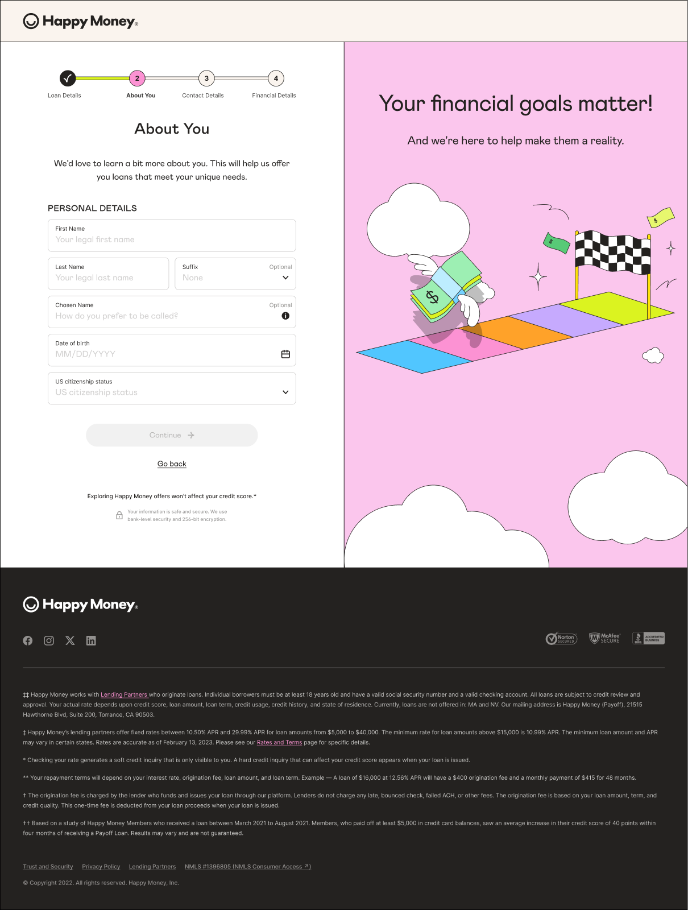

Case 04 of 08 · Systems
Happy Money / Happy Objects 3.0 → 4.0 / 2026
The brand changed. The product couldn’t afford to change one screen at a time.
Happy Money was preparing for a major visual reset. The new brand was warmer, sharper, and more grown up. Persimmon replaced the old pinks. Midnight introduced a deeper functional base. Linen softened the surfaces around them.
On paper, it was a brand update. Inside the product, it was something much bigger. Years of independently built experiences had left multiple implementations of the same components, hardcoded styling, one-off overrides, and inconsistent patterns across the application funnel, servicing experience, and internal product surfaces. Changing the brand meant touching nearly everything. Doing that manually would have taken far too long.
- The problem
- The product was not built to absorb a system-wide visual change. Every color, spacing rule, component state, and implementation risked becoming its own migration task.
- Why it mattered
- Brand work could not become a multi-year product rewrite. We needed a way to modernize the experience without slowing down the roadmap around it.
- My role
- I led the design-system work across Happy Objects 3.0 and the evolution toward 4.0, partnering with design and engineering to standardize the foundation, define the new visual system, and rethink how future changes could propagate through the product.
- What I changed
- We moved from fragmented, screen-level styling toward a shared architecture of primitives, semantic tokens, reusable components, and system rules that could support automated transformation.
- The result
- Instead of treating the rebrand as hundreds of individual redesigns, we built a system capable of carrying the change for us.
At a glance

01 / One language
First, we had to make the product speak one language.
Before Happy Objects 3.0, the same visual idea could exist in several forms.
A button might look nearly identical in two experiences while being implemented completely differently underneath. Colors lived as hardcoded values. Spacing rules varied by team. Component behavior could drift depending on where it had been built.
The problem was not simply inconsistency. It was leverage. There was no reliable way to change one decision and know that the rest of the product would follow.
So before we could rethink the brand, we had to rethink the foundation.
02 / System rules
Happy Objects 3.0 turned individual decisions into system rules.
The goal was not to redesign a handful of screens.
It was to create the infrastructure behind roughly 125 product surfaces. We consolidated component patterns, standardized spacing, established primitives and semantic tokens, and moved recurring visual decisions out of individual screens and into a shared system.
Buttons, inputs, selectors, transaction patterns, navigation, typography, spacing, and states began to inherit from the same source of truth. That distinction mattered.
This button is coral.
This is the primary action color.
This spacing is 24 pixels.
This is the standard spacing between related sections.
The difference sounds small. It changed everything that came next.
03 / The rebrand
Then the rebrand arrived.
We were no longer looking at the product as a collection of screens. We could see it as a network of relationships.
Persimmon did not simply replace pink. It needed to inherit the right role.
Midnight was not just a new dark blue. It had to understand where it functioned as a surface, where it acted as a foreground, and how components behaved when placed on top of it.
Linen was not just another cream. It had to work as part of a complete neutral scale across surfaces, dividers, disabled states, and subtle hierarchy.
That turned the work from visual replacement into system translation. And that is where Happy Objects 4.0 began.
04 / The question
We stopped asking, “What should this screen look like?”
We started asking, “What rule should make every screen behave correctly?”
That change in framing opened the door to automation. Because the product had already been normalized around shared tokens and component patterns, many of the most repetitive parts of migration could now be handled programmatically.
Instead of manually finding every instance of a legacy color, we could map old token roles to new ones. Instead of writing every component-state combination by hand, we could generate and validate those variations against defined rules. Instead of relying entirely on visual QA to catch inconsistencies after implementation, we could use automated comparison and regression workflows to surface mismatches earlier.
AI became useful here not as a replacement for design judgment, but as a force multiplier. The system made the rules legible. AI helped us apply them faster.
05 / The graph
One rebrand. Hundreds of downstream decisions.
A single palette change touched much more than color.
A primary action needed default, hover, focus, pressed, and disabled states. A dark surface changed the contrast requirements for text, icons, controls, and borders. A new neutral system affected cards, inputs, backgrounds, separators, and information hierarchy. And every one of those decisions needed to hold up across desktop and mobile.
In a screen-by-screen workflow, this becomes a checklist. In a design system, it becomes a dependency graph. We designed for the graph.
06 / Shipping change
The system began doing work the team used to do manually.
Token mappings could translate legacy roles into the new visual language. Component variants could inherit those new values without each implementation being individually redesigned. Automated visual checks could flag contrast issues and unexpected deviations before they became production defects.
Find, redesign, implement, inspect, fix.
Define, propagate, validate.
That was the real evolution from Happy Objects 3.0 to 4.0. Not a prettier component library. A different way of shipping change.
07 / Optionality
The payoff was speed. The bigger win was optionality.
The immediate benefit was obvious: a migration that could have stretched across a much longer implementation window could be compressed dramatically. The more important outcome was what happened after the rebrand. Future product teams no longer had to make the same foundational decisions over and over.
The system now had a stronger answer to questions like:
- What is the primary action treatment?
- How should this component behave on a dark surface?
- Which spacing pattern belongs here?
- What happens if the brand changes again?
- How do we know one implementation has drifted from the rest?
The answers increasingly lived in the system instead of in someone’s memory.
08 / What changed
It made change cheaper.
Could inherit from a more consistent system foundation.
A shared language between design intent and implementation.
Moved toward standardized, reusable behavior.
Consolidated into a scalable visual library.
Styling-related QA issues, which had represented a meaningful portion of front-end friction, became something we could address at the system level instead of repeatedly at the feature level.
In hindsight
The part I’m most proud of wasn’t the rebrand. It was making the next rebrand easier.
Happy Objects started as an effort to bring consistency to the product. It became infrastructure for change. By separating visual decisions from individual implementations, we created a foundation that could evolve without forcing every team to start over. And once that foundation existed, AI could finally be useful in a meaningful way. Not because it knew what the product should look like. Because we had already designed the rules well enough for the system to act on them.
Next / 06 / Iteration
No dead ends when a connection breaks.
Let's talk
What are you working toward? Get in touch, read the resumé, or see all work.